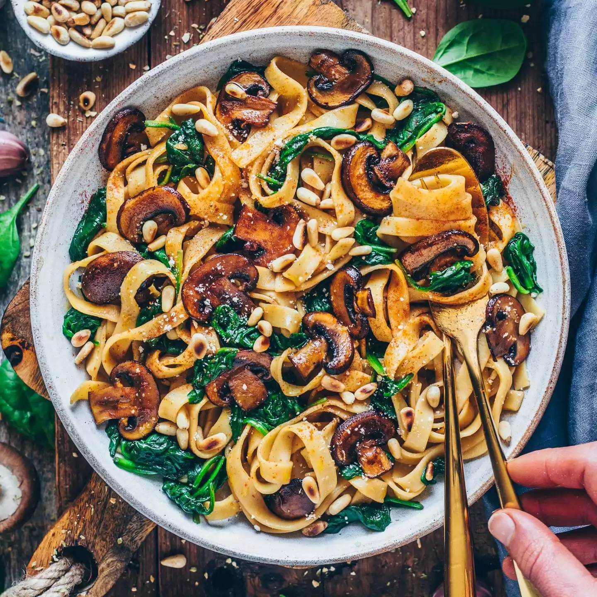

Index
Mushroom Sauce One Pot Pasta

Description
For this recipe, the idea is to make it all in one pot, so it's very easy to do!
You just gradually add in the ingredients in the correct order, wait a bit
and there you go! It's a simple pasta dish, using a coconut
milk base for the sauce and some strong flavoring ingredients like soy
sauce, chilis, vegetable broth
and of course mushrooms.
Ingredients (makes several days' worth)
- 500g pasta
- 400ml creamy coconut milk
- 2-3 shalottes
- 6-8 cloves of garlic
- Chilis to taste
- 200g mushrooms of your liking
- Spinach to taste
- A bit of soy sauce
- 2 blocks of instant vegetable broth
- Nutritional yeast
- Dried tomatoes
Steps
- Cut the chilis, shalottes and garlic however you like them, although I recommend
mincing them as finely as you can get it. Add to the pot with a bit of oil
and cook until they're soft and the shalottes are nicely browned. You might have
to splash in some water from time to time to make sure that nothing sticks to the
pot. But don't overdo it. Just pay close attention to this part, because it's all
fucked if you burn the shalottes.
- Once the shalottes are browned, cover the bottom of the pot with water (just
enough to stop the shalottes from frying) and dissolve the broth cubes.
- Next, add the coconut milk and nutritional yeast,
give it a stir, then add soy sauce (just a bit), mushrooms,
dried tomatoes and pasta. The pasta should still
be just barely covered by the coconut milk. If they aren't, add a bit more
coconut milk. Cook for about 10 minutes or until the pasta is
cooked to your liking. Stir it from time to time so nothing sticks to the pot.
You may have to add your spinach here, check the next step for
more info.
- If you have fresh leafy spinach, add your spinach
once the pasta is done cooking and give it another stir.
If you are using frozen spinach, you should have added it
earlier with the other ingredients.
- Enjoy!!